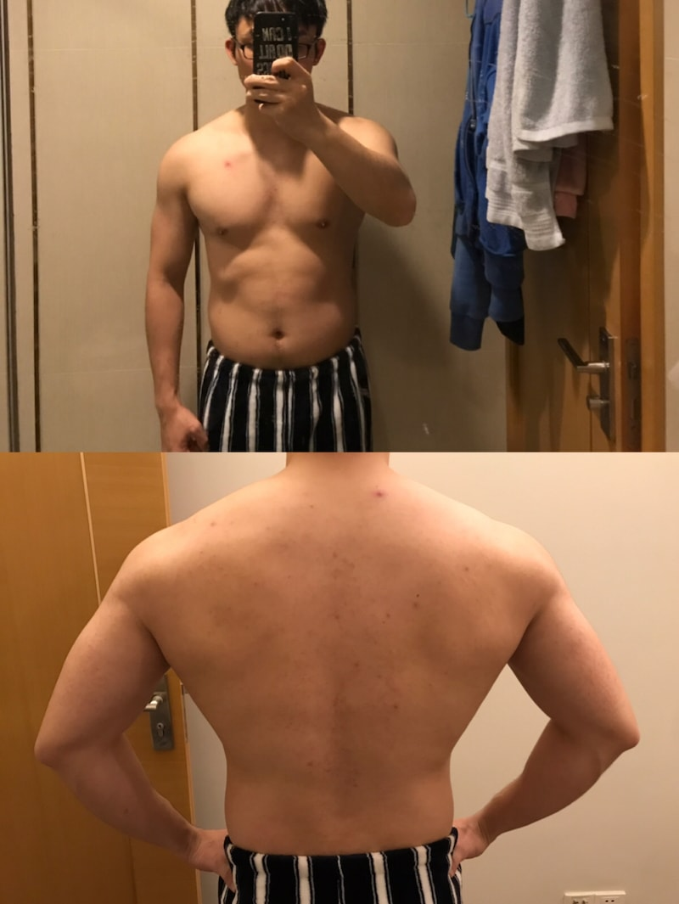

好久没写博客了，没想到一写博客竟然是年度总结了。本来文章的标题应该是2018年终总结，但是想想都过了1月1日了，也算不上是年终了，还是改成现在的标题吧。
为了方便，在本文中，“今年”就是18年，“去年”就是17年。
今天在启动去年实现的博客系统Turto的时候还有点小紧张，怕它会不会突然不work了，但最后它如同一台尘封了许久的机器亮起了指示灯后又让我如释重负。
并没有完成。 在去年的年终总结里，我希望的是自己能捣鼓些图形学的知识，还有看完《深入解析MacOS & iOS操作系统》或《iOS逆向工程》两本书中的一本。
可惜的是，我并没有完成这个自己立下的目标，而且我大概率也不会在未来完成这个目标。
今年年初的时候，我有尝试过学习OpenGLES，去看过相关的文献，花了我大概一个月的时间，但是并没有什么令人喜悦的进展，并且这项技能在我现在的生活中，能运用到的地方实在太少了，我不做游戏也不建模，实在没有练兵之地，遂放弃。
而没有执行上述目标的后半部分，看完自己挑选的二书之一，纯粹是因为自己懒，不肯看书。
如果说18年有什么事情是我人生中最重要的事情，也许就是和我最心爱的保怡🐷结婚了，她让我变得更成熟，更稳重，让我了解到这个世界还能这么美好。
我想，我爱我的老婆，真的。
与去年不同，今年的工作量一下暴涨，每个版本的需求基本都排得满满当当的，我基本没有闲下来的时间，尤其是7-10月期间我们整组都在非常紧绷，连续了三个月的996。
今年关于工作，有喜有忧，喜的是，自己终于可以去承担更多工作中的事务；忧的是，在7-10月期间我们整组“憋”出的大版本中，我惹出了影响面本可能挺广的崩溃——所幸的是在同组同事的一起努力下，我们一起把bug修复，将破坏与损失降到了最低。
因为保密协议，我不能把工作的细节说得太细，但这件事的经历，给我狠狠地上了一课，让我去思考如何在设计一个庞大的系统的时候考虑得更多，如何确保同样的事情，我不会再犯。
起初，我没有想清楚，这件事也一直埋在心里，偶尔在晚上，我就会重新想一遍怎么解决这个事，怎么让自己真的从这次失误中汲取教训，而后成长。
直到有一天，我翻开了放在书柜里许久的《代码大全2》。这是本大部头，至今我也没看完，但是所看的章节，也让我对自己的职业以及工作有所顿悟。
程序员构建任何软件之前，一定要进行一定程度的设计。
我们程序猿，实际上也是工程师的一类，我们有一个高大上的职业名——软件工程师，我们设计并构建软件。实际上我们本质上和建筑工程师没啥大的差别，只不过别人造的是房子，而我们，造的是软件。一个建筑师，在构建任何一个房子之前，最重要的就是进行一顿设计，紧接着再一砖一瓦地把房子砌成，想想建筑师如果构建一栋房子没有详尽的设计，万一建到一半它垮了，或者建到即将封顶的时候才发现整个结构出现了重大的偏颇而不得不重头再来，抑或建成后过了一小会它就整栋垮塌，该怎么办呢？程序员实际也一样，如果不先构思和设计好自己即将构建的软件就动手编码，恐怕会造成很多无法预测的问题。
这是我从这本书中得到的知识，收获的顿悟。至少在经历了今年的这次“麻烦”以后，我对自己的编码习惯深感挫败。
从此，我认识到——无论是开发大小需求，与其直接埋头苦干，先设想好如何架构程序再动手或许更佳。一下午、一天、或者一周的详细设计能为开发的后期节省的时间将远大于在设计上花费的时间，这一点，我从10月后就深有感触。因为从10月后，我学会了先设计再动手，这不仅让我的bug数量下降许多，并且开发速度有增无减。
总的来说，我进步了。
今年要说有什么真的让我很自豪的事情，大概就是健身了吧。
今年年初拔钉子后，我一直在等公司的健身房开门，所以一直没去训练。等到4月公司的健身房依然还没开张大吉，我就去离公司比较近的10 to 10健身房办了张卡，结果办完卡的下一周，公司的健身房就开门了：）
我琢磨了好一阵子，这个
10 to 10是啥意思，后来感觉它就是营业时间从早上10点到晚上10点而已。
大约5月的时候重拾健身，此时的我74-75kg左右，但是体脂高得吓人，可以说我已经就是个大胖子了——胸肌背肌基本看不见了，还顶着个大大的肚子，双下巴也很明显。
一开始很难，我按照着老的习惯，试图周一三五的晚上都跑去健身房训练，但是往往我每周都只能去一到两次——原因是，之前不用去健身的时候，我可以一晚上都在家里自娱自乐，相当悠闲，但一旦去健身房，就会一整晚都在健身和洗健身装备中度过，我的内心接受不了这一点。
并且，我的左膝在一次参加公司的篮球活动中弄伤了，导致我更加顺理成章的不用练腿（意味着每周只用去两次健身房就行）。
一周去两次健身房的生活持续到6月底，然后因为公司开始996了，我就转成中午健身——切换到中午健身以后，我发现这样更适合现在的生活，个中缘由不必说自然是晚上的时间再也不用整段地被健身占据了，哈哈。
而因为左膝的伤势渐渐康复，我又恢复了一三五健身的规律，只不过周五不是练腿，而改成了既不太伤膝又能练腿还能减肥的有氧，同时我这么想——如果哪次有氧过后，我的左膝不再有弹响和奇怪的感觉，下一周就练腿。
因为中午的训练时间不长，只有45-60分钟左右，所以我想增加每周的训练次数来强化训练效果，恰逢此时，老婆催促我赶紧减肥，将来拍婚纱照的时候会好看一点，于是我就变成了周一至周五每天都去健身房的人。
周一练胸，周二有氧，周三练背，周四有氧，周五练腿或杂七杂八加练日。
到现在，我瘦下来了，不像以前那样肥肉一坨坨的了。不过，可惜的是，每天的训练时间都变短了，所以我再也没有练腹肌了：P
贴一张上肢的近况照吧：

背的进步倒是相当明显，翅膀都出来了。：P
可能因为生活变忙碌了，有大段能花在打机上的时间也变少了，而且也不知道是不是因为年纪增长，觉得玩英雄联盟好累，所以现在基本都不怎么玩网游了。有时间就玩一下ps4。
今年是主机游戏的爆发年，有很多美好的游戏给我留下了深刻的印象。
《血源诅咒》真是一款神奇的游戏，从最开始的很害怕，到后来觉得它很好玩，再到现在我已经快把它白金了，真的很感概它给我带来的那些转变。
今年花在读书的时间也比往年多了，也许是因为自己所拥有的时间都比较琐碎了吧。而且经常我内心觉得玩游戏累的时候，我就会把时间花在读一本小说上。如果说我的18年有一本年度小说的话，我会说是《了不起的盖茨比》。
我无法忘记书中的盖茨比先生，对梦想的追求的那股纯粹，究竟有多么的震撼人心。印象最深的就是我坐在沙发上拿着书本，但内心却在颤抖的那个时刻。
以上。
初看pull命令，当我们运行git pull的时候，似乎像是将当前本地分支所跟踪的远程分支的新内容下载至当前的本地分支上，而它有别于fetch，git fetch更像是刷新一下远端的分支的新提交信息，而并没有真正的下载所有的新内容。 但是实际上，并不是这样的。 git fetch本身就是一个下载命令，但是fetch只会更新本地的远端分支，也就是诸如origin/master, origin/feature等带有远程仓库前缀的分支，所有的远端分支的引用信息被存在.git/refs/remote……
继续阅读